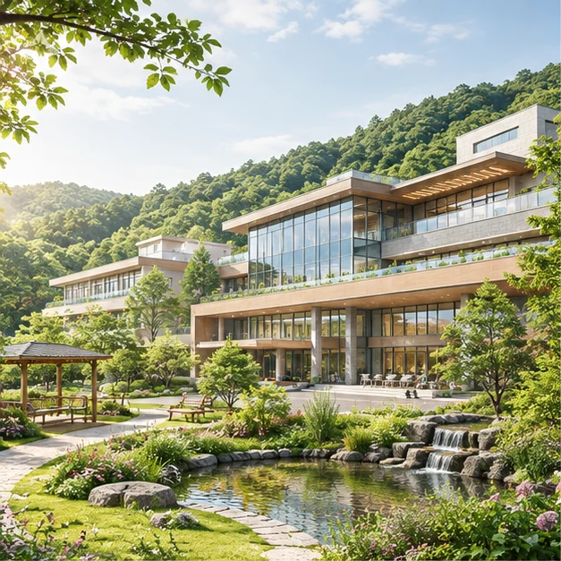
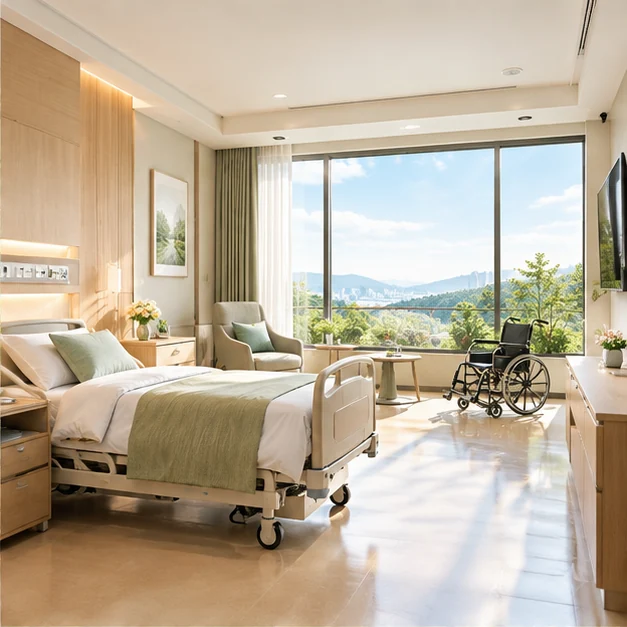

CARE GUIDE 20262026 요양병원 vs 요양원, 차이점과 비용 비교
요양병원은 의료기관으로, 입원 필요도와 진료·치료가 중요한 판단 기준입니다. 요양원은 장기요양급여를 통한 돌봄 중심 시설로 제도가 다릅니다.
원문 보기 ↗입원 준비부터 회복에 도움이 되는 정보까지, 가족을 위한 쉽게 읽히는 안내서.

CARE GUIDE 2026요양병원은 의료기관으로, 입원 필요도와 진료·치료가 중요한 판단 기준입니다. 요양원은 장기요양급여를 통한 돌봄 중심 시설로 제도가 다릅니다.
원문 보기 ↗기능 평가, 재활 인력, 치료 강도, 병상 여건, 퇴원 후 연계 계획을 확인하세요. 누구에게나 동일한 '골든타임'이나 회복 결과를 약속할 수는 없습니다.
센터 콘셉트 보기 ↗
HEALTHCARE FINANCE치료의 적응증 및 보험금 지급은 의학적 필요성, 실제 약관, 급여 여부 등에 따라 달라집니다. 서류를 준비하기 전 의료기관과 보험사에 직접 확인하세요.
비용 계산 데모 ↗